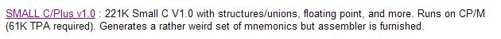
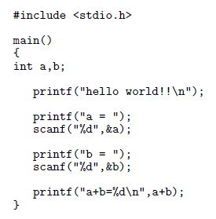
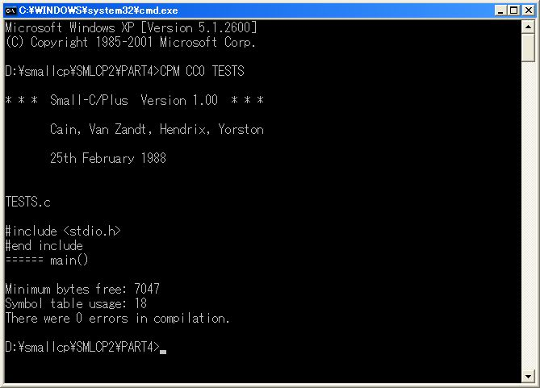
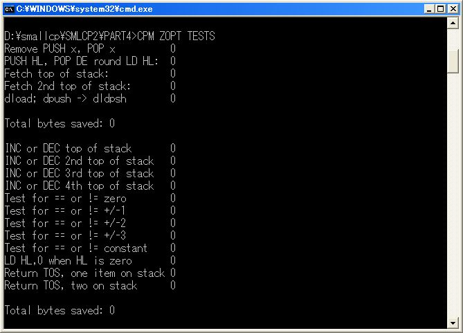
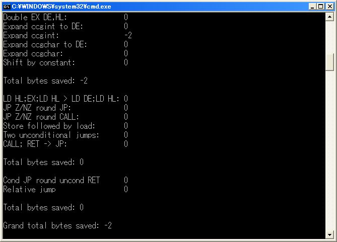
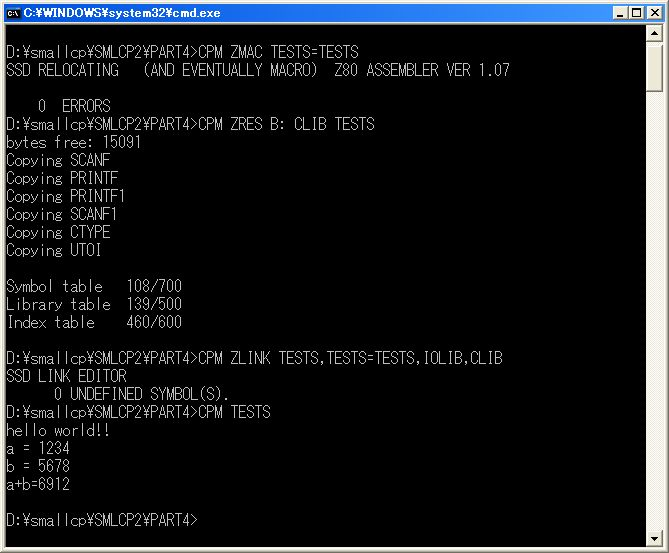
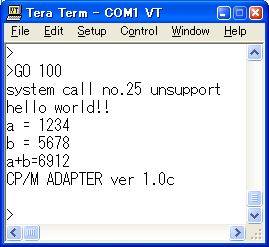
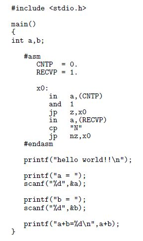
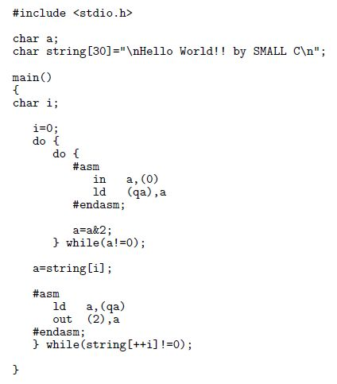
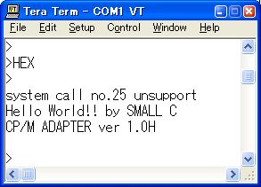

|
SMALL C/Plus v1.0 |
Z80のアセンブリ言語を出力するコンパイラとアセンブラ、リンカとオプチマイザを持っています。
このツールの入手は http://www.cpm.z80.de/ の下の所からできます。
|
 |
フリーで配布されていたHITECH-CのCP/M80版は現在(2007.12.25)はサイトから無くなってい るようですから入手可能なCP/M80のZ80版のCコンパイラとして取り上げてみます。
|
使い方 |
|
 |
コンパイラが
CC0.COM
、アセンブラが
ZMAC.COM
、リンカが
ZLINK.COM
、オプチマイザが
ZOPT.COM
です。
これらを下のように
CP/Mエミュレータ
を使って
tests.c
の実行プログラムの
TESTS.COM
を得ます。
ZRES.COM
は
CLIB.LIB
から
TESTS.C
が必要とするもの抜き出して
CLIB.OBJ
を作っているようです。
リンカでは拡張子が
OBJ
のファイルをリンクしています。
|
    |
各プログラムの使い方は付属のドキュメントファイルを参照してください。
|
 |
TESTS.COM
を
BIN2HEX TESTS.COM 100 > TESTS.HEX
でインテルへクスファイルに変換してCPMアダプタの動いているメモリモニタの基板に転送します。
これを実行したものが左です。
最初にファイル操作のシステムコールを発行しているようです。
また本コンパイラの出力するプログラムはコンソールの入力に対してエコーを返さないようなので
通信プログラムの
local echo
を有効にしないと入力する文字が見えなくなります。
|
インラインアセンブラ |
|
 |
Z80のアセンブリ言語でのインラインアセンブラが使えます。
左は
hello world!!
の後にコンソールから
"N"
の入力を待って次を続けるプログラムです。
インラインアセンブラの中では
#define
文などで定義された定数は使えないようでした。
|
IO直接操作 |
|
 |
printf 文などを使わずに直接IOを操作して文字列を送信するプログラムを書いてみました。 プログラム上では必要ないのですがコンパイルの次のアセンブルで未定義エラーがでるので stdio .h はいかなる場合も必要とするようです。 インラインアセンブラではローカル変数の位置がわからないのでグローバル変数を使いました char a はコンパイラのアセンブリ言語の出力を見ると qa になっているようです。
|
 |
組み込み用途のコンパイラでなければシステムコールを使っていないようなプログラムでも バージョン番号などの取り出しのシステムコールはほぼ行っていると思って間違いありません。 他にシステムコールを呼び出すときのBDOSの位置でシステムのメモリの大きさを判定している場合などもあります。 CP/Mのないところで実行させることも難しいこではありませんがシステムコールやBIOSの直接の呼び出しにも少しですが対応する必要もあります。 このプログラムの大きさは 3.75K バイトでした。